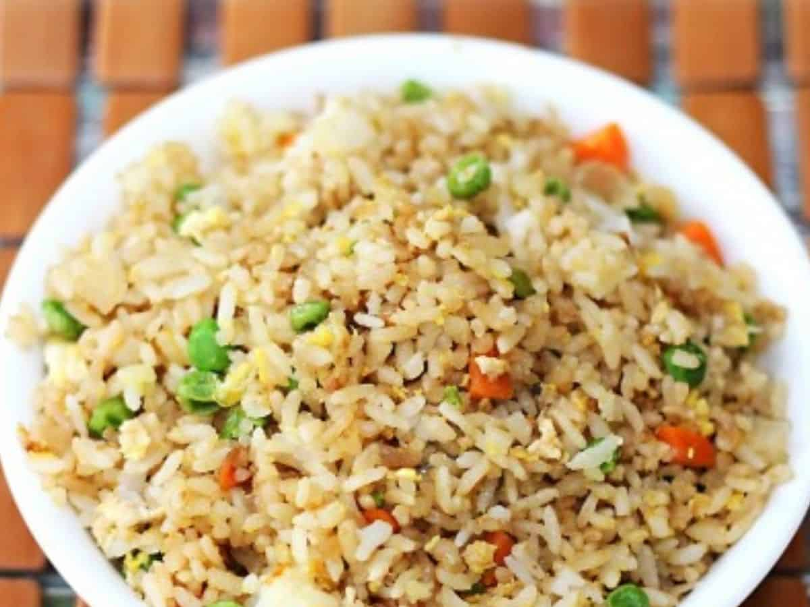
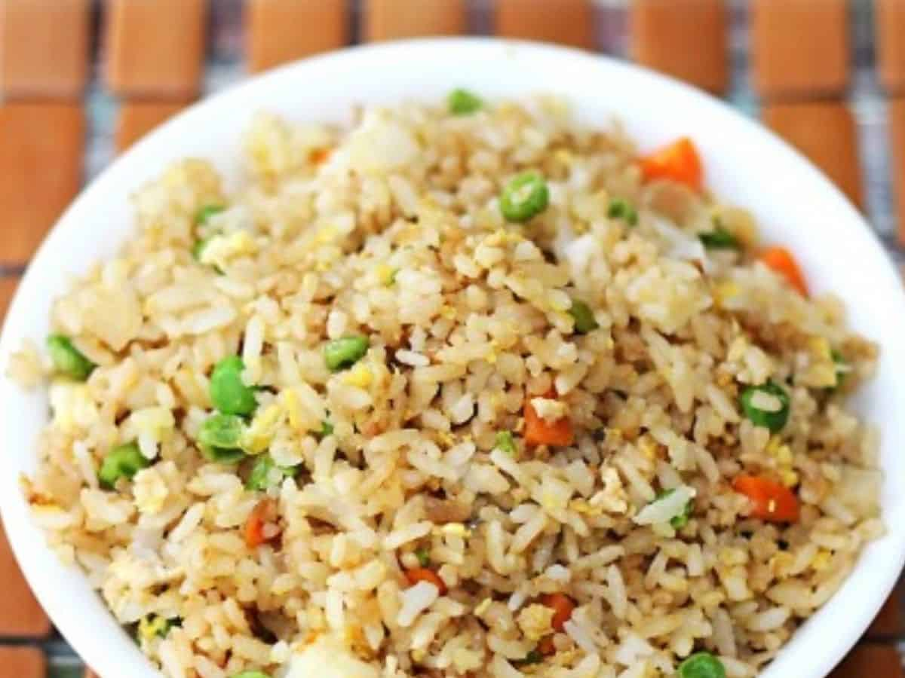

- 1 cup broccoli florets
- 1 cup bell pepper, sliced
- 1 cup snap peas or green beans
- 2 tablespoons soy sauce
- 1 tablespoon vegetable oil
- 1 garlic clove, minced
- 1 tablespoon ginger, minced
- 1 teaspoon sugar
- 1 teaspoon cornstarch mixed with 1 tablespoon water (for thickening)
Instructions:
1. Heat oil in a wok or large skillet over medium-high heat.
2. Add garlic and ginger, and stir-fry for about 30 seconds.
3. Add broccoli, bell pepper, and snap peas/green beans. Stir-fry for 3-5 minutes until tender-crisp.
4. Stir in soy sauce and sugar.
5. If desired, add the cornstarch slurry and cook until the sauce thickens.
6. Serve hot.
 
